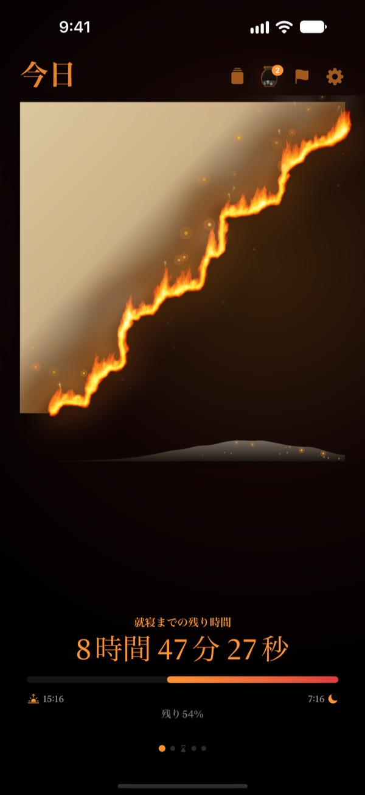
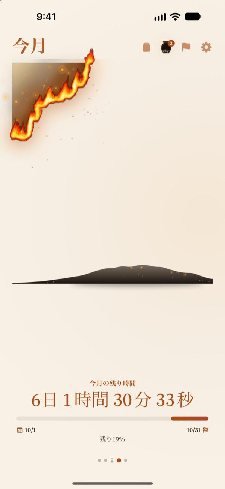
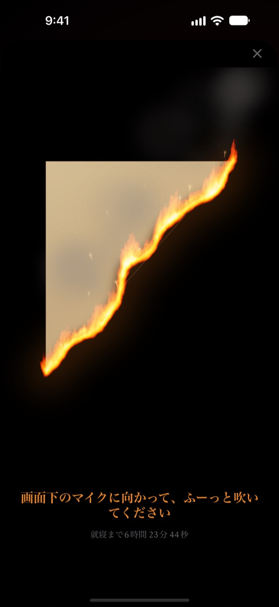
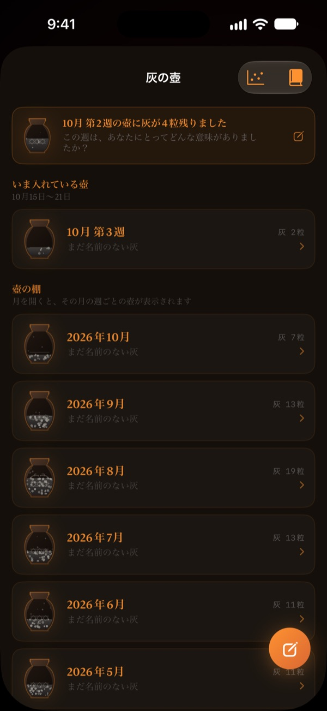

今日の残り時間が
目の前で燃えていく
数字では気にならない夜の時間も、燃える羊皮紙で見ると違って見えます。寝る30分前には画面にふーっと息を吹きかけて火を消し、一日を終えます。
燃える羊皮紙、息で火を消す儀式、ふりかえりはすべて無料です。

息で火を消してみる
時刻を寝る直前に動かしてから、ボタンを長押しするか、マイクにふーっと吹きかけてください。
「もう12時？」と驚いたことはありませんか
夕食のあと少し休んだだけなのに、気づけば一日が終わっている。時計の数字は毎晩同じに見えるので、時間が減っていく感覚がありません。燃える羊皮紙は残り時間を燃えていく羊皮紙で見せるので、夜が消える前に気づけます。
一日も一週間も一年も、燃えていく
起きた瞬間から寝る時間まで、羊皮紙がゆっくり燃えていきます。今週、今月、今年の残り時間も同じ羊皮紙で確かめられます。
期日のある目標は締め切りとして追加すれば、その日までの残り時間も一緒に数えます。

ふーっと吹いて終える一日
寝る30分前から、燃える羊皮紙に息を吹きかけて火を消せます。使うのは息の強さだけで、何も録音しません。
火を消して残ったかけらはしまっておけます。裏返して、今日のことをひとこと書き残すこともできます。

過ぎた時間は灰になって残る
一日をふりかえってひとことを書き、その時間を何に使ったかを2つの軸の上に点で置きます。ふりかえりは週ごと、月ごとの灰の壺に積もり、ふりかえりの本で読み返せます。
灰の流れでは、時間がどこへ行ったのかを分布グラフと火種のカレンダーで見られます。

始めるのは3ステップ
- 1
起床と就寝の時刻を決める
右上の歯車から変更します。その時刻に合わせて羊皮紙が燃えはじめ、消えます。
- 2
見たい期間を選ぶ
1日、1週間、1か月、1年をスワイプで切り替え。いらないページは設定で隠せます。
- 3
ウィジェットを置く
ホーム画面やロック画面に置けば、アプリを開かなくても残り時間が見えます。
残り時間が見える場所
- 1日
- 起きた瞬間から寝る時間まで
- 1週間・1か月・1年
- 今週、今月、今年の残り時間
- 自由時間
- 仕事と睡眠を除いた自分だけの時間が過ぎるときだけ、今週の羊皮紙が燃えます（Pro）
- 締め切り
- 目標の日までの残り時間。1件まで無料
- ホーム画面ウィジェット
- 1日の羊皮紙は小・中・大、週・月・年と締め切りは小・中
- ロック画面ウィジェット
- 円形、長方形、1行
- Dynamic Island・ライブアクティビティ
- 寝る1時間前から、または一日中。設定で選んだりオフにしたりできます
Dynamic Islandを広げると、燃える羊皮紙と一緒に詳しい残り時間が表示されます。
羊皮紙は無料。もっと残したいならPro
無料
- 1日、1週間、1か月、1年の羊皮紙
- 寝る前に息で火を消して、かけらを集める
- ひとことのふりかえり、灰の壺、ふりかえりの本
- 朝の確認とヘルスケアの睡眠データ連携
- ホーム画面・ロック画面ウィジェットとDynamic Island
- 締め切り1件
燃える羊皮紙 Pro
- 自分の自由時間だけを燃やす
- 羊皮紙の色合い：月明かりの韓紙、青磁、夕焼け
- 炎の種類：野火、炭火、火の粉
- 集めたかけらをカードやポスター画像で共有
- ふりかえりの本をPDFで書き出す
- 過去12か月の灰の流れ
- 締め切りを無制限に追加
サブスクリプションではありません。一度の購入でずっと使え、今後追加されるPro機能もすべて含まれます。
機種変更したときは、設定の「購入を復元」をタップしてください。
よくある質問
ウィジェットとアプリの時間が違います。
iOSの仕組み上、ホーム画面のウィジェットは毎秒は更新されません。アプリを開くとすぐに合います。秒単位で減っていく時間は、Dynamic Islandとロック画面のライブアクティビティで確認できます。
息を吹きかけても火が消えません。
火を消せるのは寝る30分前からです。マイクへのアクセスを許可しているか確認し、iPhone下部のマイクに近づけて1秒ほど長めに吹いてください。一瞬の短い音では消えません。
声は録音されますか？
いいえ。息の強さだけを確認し、音を録音したり保存したりすることはありません。
寝ている間は何が表示されますか？
就寝時刻を過ぎると燃えるハートが現れ、起きるまでの睡眠の進み具合を表示します。翌朝は昨夜時間どおりに寝たかを尋ね、遅かった分だけ今朝の羊皮紙が焦げます。ヘルスケアと連携すると、尋ねずに記録された入眠時刻を使います。
通知はいつ届きますか？
就寝の1時間前に届きます。届かない場合は、設定 > 通知 > 燃える羊皮紙で通知が許可されているか確認してください。
バッテリーをたくさん使いますか？
アプリ内のカウントダウンは1秒ごとに動きますが、ウィジェットはiOSが管理する省電力の方式で更新されるため、影響はわずかです。
記録はどこに保存されますか？
起床・就寝時刻、締め切り、ふりかえりと壺はデバイスの中にだけ保存されます。開発者に届くのは匿名の利用統計とクラッシュ診断、ご自身で送ったフィードバックだけです。広告もトラッキングもありません。
Proはサブスクリプションですか？
いいえ。一度購入すればずっと使えます。機種変更したときは、設定の「購入を復元」をタップしてください。
不具合の報告、機能のご要望、そのほかのお問い合わせは leeo@kakao.com までお送りください。